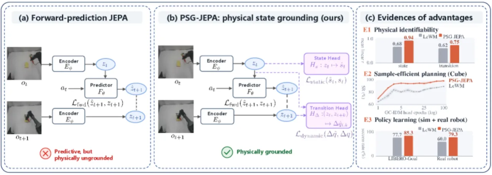
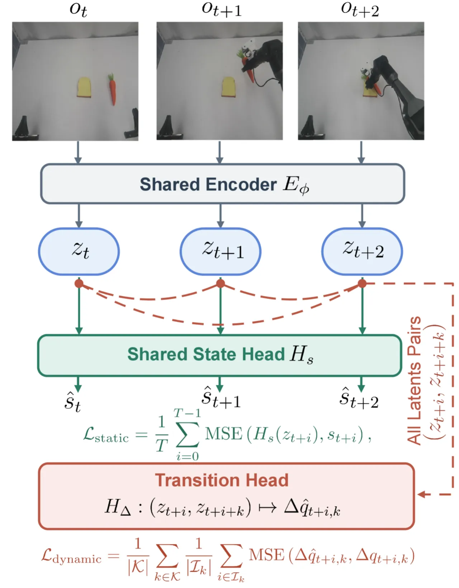
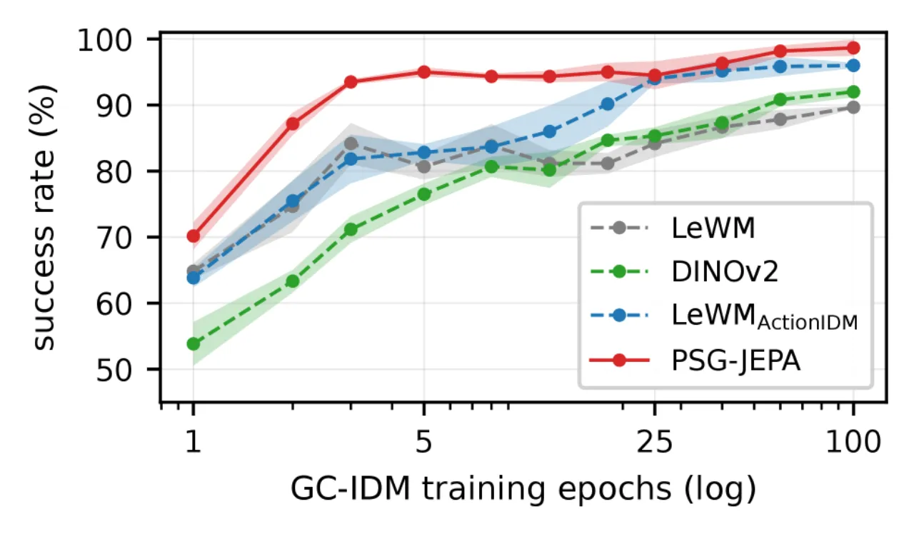
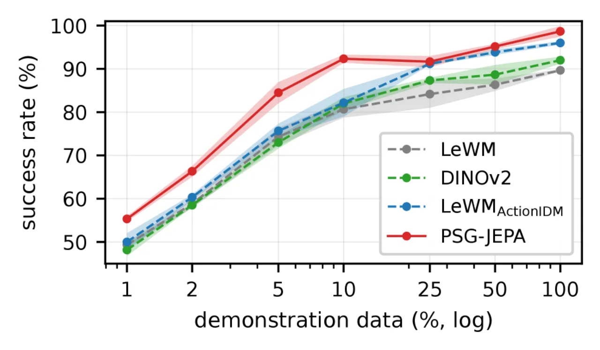

JEPA 世界模型只用 action-conditioned 前向预测塑造潜空间，却不保证潜表征能可靠地解码出机器人自身的物理状态。PSG-JEPA 在前向预测之外，加入两条仅在训练期生效的锚定目标——把单帧潜向量锚到本体状态、把潜向量对锚到多步关节角变化，从而让潜空间"看得见"物理状态。推理架构与算力完全不变，却在可辨识性、规划、策略三层评测中全面超越 SOTA 潜世界模型。
近期 JEPA-based 世界模型（如 LeWM）从观测序列中学习 action-conditioned 的潜动力学。但作者指出：前向预测目标并不显式监督"从单个 latent 解码机器人物理状态、从 latent 对解码状态变化"这件事，于是留下一个 "robot-centric identifiability gap"——视觉与动作之间的对齐关系没有被编码进表征，下游 planner / policy 只能自己从头去学，进而限制规划与策略的性能。
"control requires relating visual observations to the robot's state and to how actions change it" —— 因此把 vision–action 对齐放到表征层本身，是控制的基础。

PSG-JEPA 在标准前向 JEPA 损失之外并联两条 physical state grounding 目标，用来"塑形"潜空间。共享 encoder 对每帧观测 ot+i 产出 zt+i=Eφ(ot+i)；两条目标各挂一个轻量 head，只在训练时使用、训练后丢弃，因此推理结构与算力与基线完全一致。

把每个 latent 拉向机器人本体感知状态（joint angles、gripper state、end-effector pose）。损失为
ℒstatic = (1/T) Σi=0..T−1 MSE(Hs(zt+i), st+i)。
这保证"从单个 latent 就能线性/MLP 读出机器人物理状态"。
把 latent 对 (zt+i, zt+i+k) 拉向对应的 multi-horizon 关节角变化，横跨所有 horizon k ∈ {1,…,T−1}：
ℒdynamic = (1/|𝒦|) Σk∈𝒦 (1/|ℐk|) Σi∈ℐk MSE(Δq̂t+i,k, Δqt+i,k)。
相比只在相邻帧上做 one-step inverse-dynamics，这里的 multi-horizon 端点对提供了更丰富的"状态变化"监督。
总损失为 ℒPSG = ℒJEPA + λg(ℒstatic + ℒdynamic)，其中 λg = 0.1。state head Hs 与 transition head HΔ 均在训练后丢弃，推理架构和计算成本保持不变。
在三个层级评测：(1) 通过 probing 检验 latent 的物理可辨识性；(2) 在冻结 latent 上做 goal-conditioned planning；(3) 在仿真与真机上做 policy learning。基线包括 LeWM（同 backbone 前向预测）、LeWMActionIDM（相邻对加一步 inverse-dynamics 目标）、DINOv2（预训练视觉参照）。
Table 1 单帧状态探针：PSG-JEPA 在 EE-yaw 上 r 达 0.94/0.98，而 LeWM 仅 0.08/0.08、LeWMActionIDM 仅 0.11/0.10——前向预测/单步 IDM 几乎"看不见"末端偏航。
| Method | JointPos | EEPos | Gripper | EE-yaw |
|---|---|---|---|---|
| LeWM | 0.71/0.69 | 0.99/0.99 | 0.93/0.96 | 0.08/0.08 |
| DINOv2 | 0.73/0.72 | 0.99/0.94 | 0.84/0.84 | 0.51/0.50 |
| LeWMActionIDM | 0.75/0.72 | 1.00/0.99 | 0.96/0.98 | 0.11/0.10 |
| PSG-JEPA | 0.83/0.81 | 1.00/0.99 | 0.97/0.98 | 0.94/0.98 |
Table 2 相邻对的 transition 探针：JointVel 0.75/0.75、GripVel 0.69/0.76、Action 0.80/0.86，均为最优或持平最优。
PSG-JEPA 在小 planner 训练预算和小数据下优势最大：OGBench-Cube 全量数据、GC-IDM 仅训 5 epoch 时即达 95.0±0.7，而 LeWM 80.7±1.9；训到 100 epoch 时达 98.7±1.2。
| 设置 | LeWM | DINOv2 | LeWMActionIDM | PSG-JEPA |
|---|---|---|---|---|
| Cube · 全量 · 5ep | 80.7±1.9 | 76.5±1.6 | 82.8±1.2 | 95.0±0.7 |
| Cube · 全量 · 100ep | 89.7±0.2 | 92.0±0.8 | 96.0±0.4 | 98.7±1.2 |
| Cube · 25%数据 · 5ep | 67.0±0.7 | 60.8±5.1 | 63.2±1.8 | 76.7±2.2 |
| Scene · 全量 · 100ep | 91.0±1.1 | 90.2±1.4 | 94.7±0.6 | 96.2±0.8 |
| Scene · 25%数据 · 100ep | 83.0±1.1 | 80.0±1.1 | 87.3±1.6 | 89.7±0.9 |

LIBERO-Goal（10 任务，每 seed 50 rollout，3 seeds）：PSG-JEPA 85.3±3.9%，高于 LeWM 77.7±0.5%、LeWMActionIDM 82.6±2.2%、DINOv2 80.1±5.3%。真机 Dual-arm Cobot（Mobile ALOHA 设计，每任务 50 trials）三项任务全部超越 LeWM，平均 79.3% vs 60.0%。
| 真机任务 | LeWM | PSG-JEPA |
|---|---|---|
| Place-to-Bread | 62% | 84% |
| Place-to-Plate | 58% | 74% |
| Pour-Water | 60% | 80% |
| Average | 60.0% | 79.3% |

逐一移除组件均导致下降，说明"每个 grounding 组件都有贡献"：去掉 transition head 时规划仅 81.3±2.4%、去掉 state head 时探针 r 掉回 0.69；把 multi-horizon 换成仅相邻对（adjacent/endpoint）规划为 93.5/93.7%——均不及完整版的 95.0±0.7% 与策略 85.3±3.9%。
| Variant | State Probe r | Transition Probe r | Planning SR% | Policy % |
|---|---|---|---|---|
| LeWM | 0.68 | 0.62 | 80.7±1.9 | 77.7±0.5 |
| w/o transition | 0.93 | 0.72 | 81.3±2.4 | 80.3±3.9 |
| w/o state | 0.69 | 0.67 | 93.3±1.2 | 80.0±2.3 |
| w/o multi-horizon (adj.) | 0.86 | 0.74 | 93.5±1.9 | 81.5±3.1 |
| w/o multi-horizon (end.) | 0.86 | 0.75 | 93.7±2.0 | 81.2±2.7 |
| PSG-JEPA (full) | 0.94 | 0.75 | 95.0±0.7 | 85.3±3.9 |
两条 grounding 目标都需要与观测对齐的 robot state / joint-angle 日志（st+i、qt+i）。对无本体状态记录、或仅有视频的数据集，训练期监督难以获得。
锚定目标聚焦机器人自身状态与关节角变化，未显式锚定被操作物体 / 场景的物理量；对以物体状态识别为瓶颈的任务，收益可能有限。
结论建立在 OGBench(Cube/Scene)、LIBERO-Goal 及一套双臂 Cobot 真机任务上；跨更多机型/更长时序/更复杂场景的泛化仍待验证。